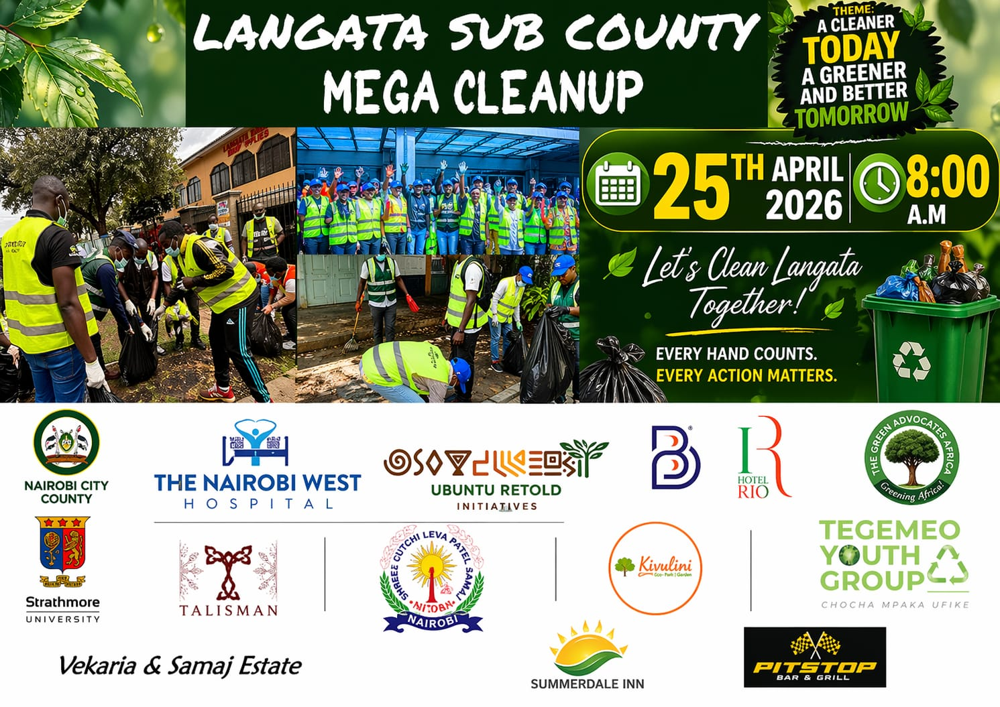
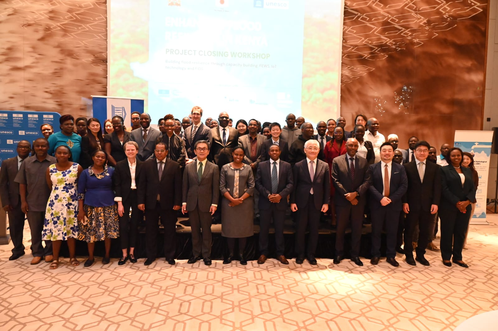
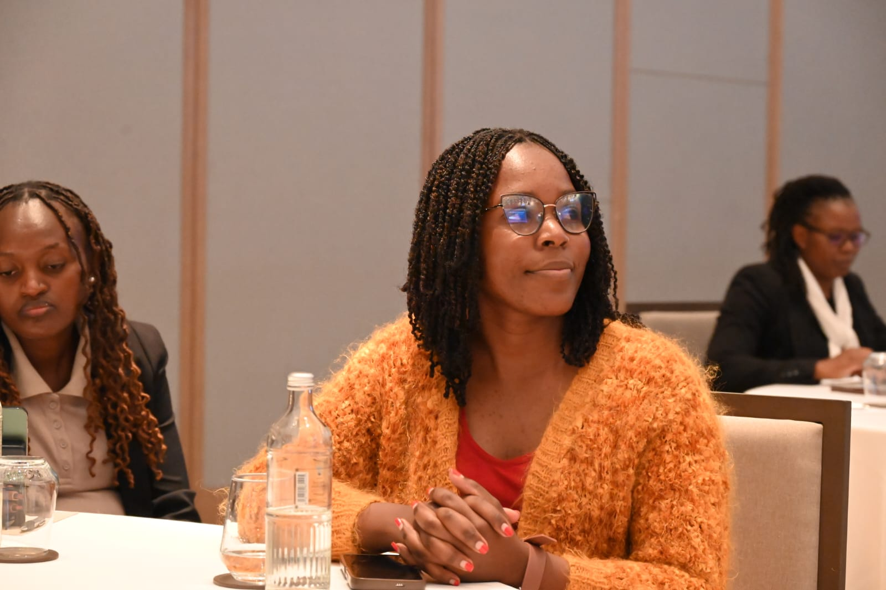

Stay informed about our latest activities, achievements, and reports.

Past Event · April 25, 2026 · Nairobi West, Nairobi
Theme: “A Cleaner Today, A Greener and Better Tomorrow.”
A community mega cleanup organised by The Nairobi West Hospital. Ubuntu Retold Initiatives joined as invited partners, alongside Nairobi City County, Strathmore University, Hotel Rio, The Green Advocates Africa, Tegemeo Youth Group, and other community partners.
Date: Saturday, 25th April 2026, 8:00 AM
Location: Nairobi West, Nairobi (Langata Sub-County)
I am because we are. Together, we clean. Together, we heal. Together, we thrive.

Community Impact · April 16, 2026 · By Ubuntu Retold Initiatives
On Wednesday April 16th, 2026, our Chairperson represented Ubuntu Retold Initiatives at a flood resistance event — a timely and critical conversation around climate resilience and community preparedness. The event brought together stakeholders committed to finding lasting solutions to the flooding challenges that affect many Nairobi residents.
Our Chairperson's presence reaffirmed our commitment to environmental justice and community advocacy. Ubuntu Retold remains dedicated to being at the table wherever our communities are being discussed and defended.

Events · Africa Day at United States International University
One of our proudest moments — representing Ubuntu Retold at the Africa Day celebrations at United States International University (USIU), where we had the honour of meeting and listening to Prof. PLO Lumumba deliver a powerful keynote on leadership in Africa.
A celebration of African unity, identity, and the next generation of leaders. Watch the keynote highlight on this card, and see more from the day in our gallery.
View GalleryWe are committed to openness and accountability in everything we do.
Our comprehensive annual reports detail achievements, financial summaries, and strategic plans. Available: 2024 & 2025 reports.
2025: KES 2.5M income, 78% to programs. 2024: KES 1.2M income, 75% to programs. Full breakdowns available on request.
Our CBO Constitution, Registration Certificate, and Code of Conduct are available for public review.
Independent evaluations of our Youth Mentorship and Environmental Programs demonstrate measurable community impact.
For copies of any reports or documents, contact us.